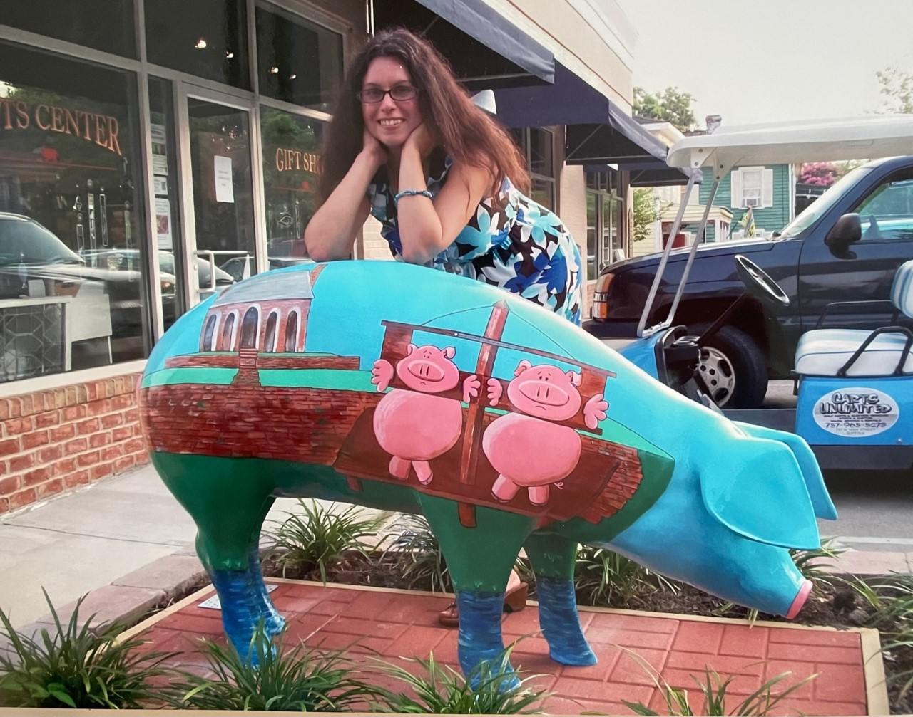
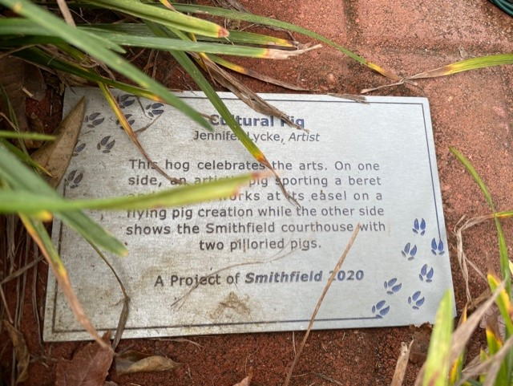
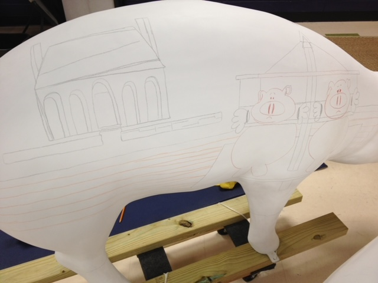
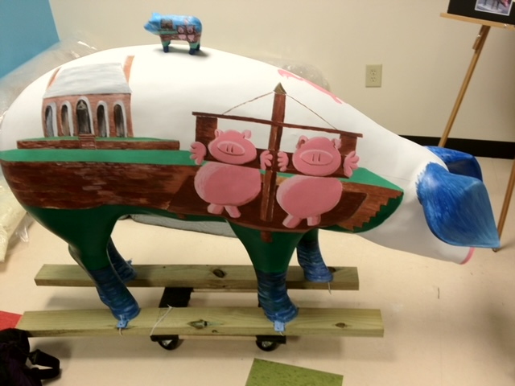
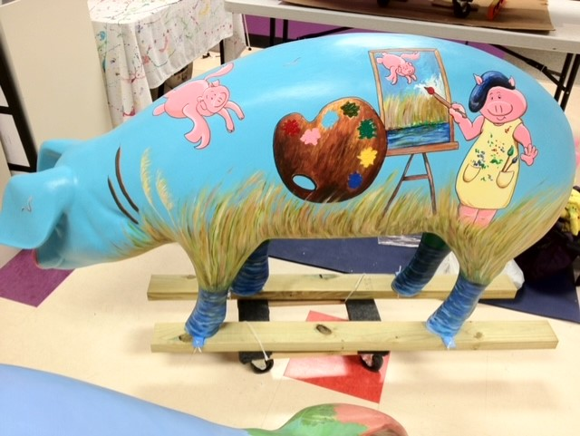
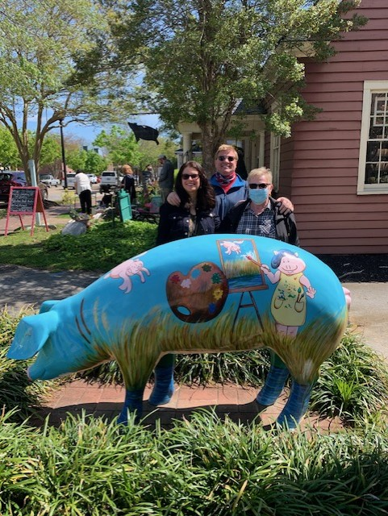
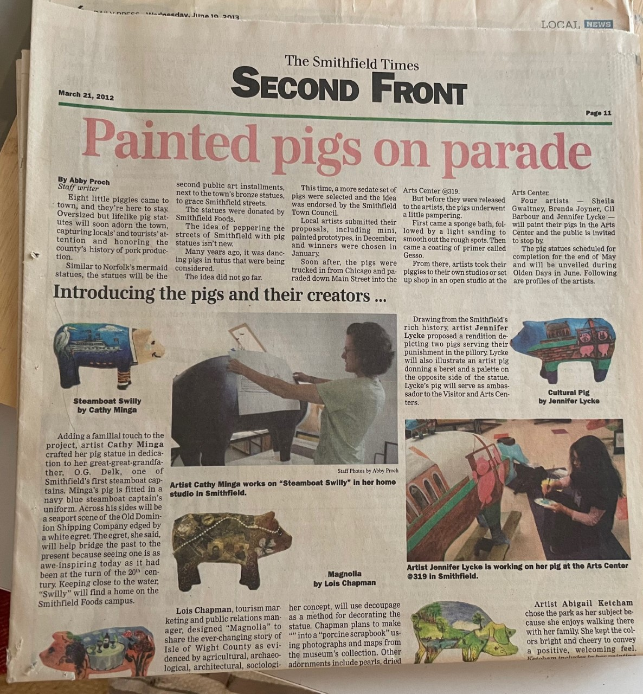
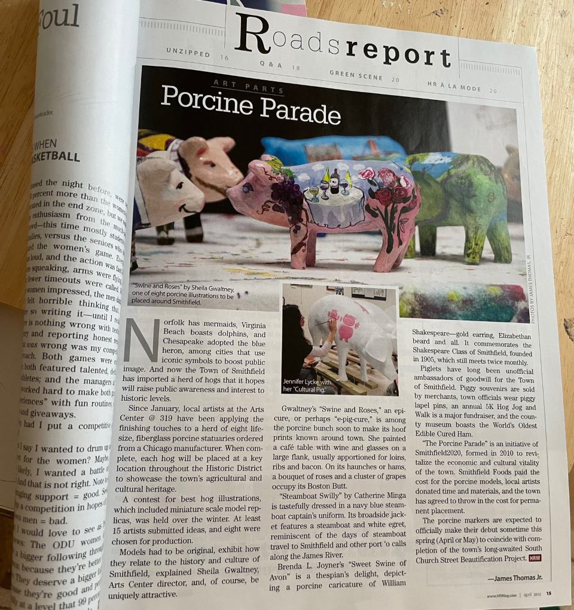

UI/UX Designer
 Back to Home
Back to HomeJust For Fun - Pig Statue Public Art Project
The town of Smithfield, VA, known for Smithfield Hams, decided to have local artists paint pig statues that would be displayed around the downtown area. They asked people to submit prototype designs of their ideas. The designs of 8 local artists, including myself, were selected. After the official selection was made, the artists were each given a blank pig statue to paint with their designs. Instructions were given on the types of materials to use so that the statues would be long-lasting and weather-resistant. During the following months, I would go to the art center every evening after my Coast Guard work, where the arts center had a space set up for me to work on my pig statue. Artists could choose to work in their own location or onsite at the arts center that shares a space with the visitors center. After the art was completed, clear-coated, and installed at their locations in town with commemorative plaques, there was a ceremony dedicated to the new public art.


"Cultural Pig"
I wanted to create a pig that was popular among children and families, using bright whimsical colors. I also wanted to highlight the town's history, such as the historic courthouse and its pillories, as well as the artistic culture of the town of Smithfield. Smithfield contains a number of galleries, as well as a theatre and other artistic venues. I also wanted to incorporate the marshes of the surrounding area. They are all referenced in my design. Below are photos of the project in progress:




Media
The Smithfield Times and Hampton Roads magazine published stories about the pigs. I see the pigs referenced from time to time in online media as well.


Smithfield Virginia tourism
Smithfield 2020
Takeaways
Impact: All 8 pigs were well-received and have become popular attractions in town. The statues are often featured in regional websites and photos are often shared on social media. Cultural Pig, in particular, with its prominent location by the Visitors Center and with its bright colors, is fun for children to look at (and even climb on!).
What I learned: I learned that art can make a difference in the community for people of all ages.
Back to Home
To Top of Page
Contact
Email: jenlycke@gmail.com
Phone: (757) 477-1244


Just For Fun